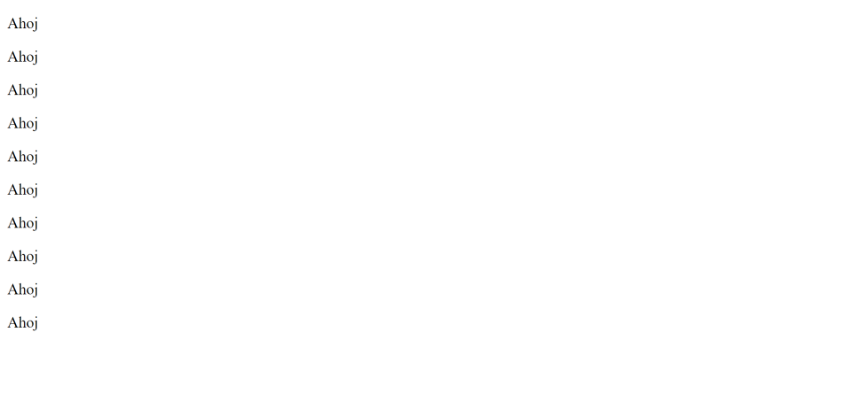
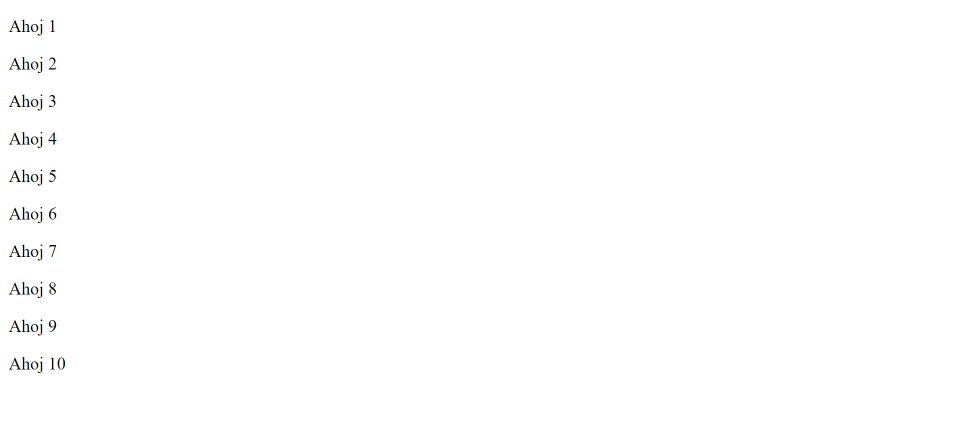

JSP tagy a implicitní objekty
V minulé části jste se dozvěděli co je to JSP. V této části si představíme různé typy tagů, které v JSP existují a 3 z nich si ukážeme i na příkladu. Ostatní necháme na další části. Kromě toho se tu dozvíte o implicitních objektech, které jsou nám v JSP k dispozici.
Typy tagů
V JSP existují různé typy tagů, které slouží k různým účelům. Všechny si je představíme a krátce popíšeme.
Comment tag
Pokud chceme v JSP psát komentáře, tak k tomu můžeme použít comment tag. Začíná na <%-- a končí na --%>.
<%-- Toto je komentář. --%>Scriplet tag
Pro psaní Java kódu se používá scriplet tag. Začíná na <% a končí na %>. Může obsahovat deklarace, příkazy nebo jakýkoliv jiný platný Java kód.
<% int x = 19; %>Expression tag
Pokud chceme na stránku vložit nějakou hodnotu, tak můžeme použít expression tag. Začíná na <%= a končí na %>. Nemusíme tedy ve scriptletech používat out.println.
<%= "hodnota" %>Declaration tag
Jak jste se v minulé části dozvěděli, JSP se konvertuje na servlet. Pokud v JSP souboru píšeme HTML kód, scriplet tagy a tak podobně, tak vlastně píšeme obsah service metody, kterou bude vygenerovaný servlet mít (v JSP teda obsah _jspService metody, ale na tom nesejde). Pokud namísto toho chceme pro výslednou servlet třídu nadefinovat nějakou metodu nebo vlastnost, tak k tomu můžeme použít declaration tag. Poté tuto metodu nebo vlastnost můžeme používat na různých místech v JSP souboru. Jednoduše nám to umožňuje napsat kód, který se umístí do servlet třídy, ne do service metody. Declaration tag začíná na <%! a končí na %>.
<%!
private int cislo = 0;
public void zvysCislo() {
cislo++;
}
%>Direktiva
Direktivy jsou elementy, které web containeru (Tomcatu) říkají, jak má JSP stránku převést na servlet. Začínají na <%@ a končí na %>. Více se o nich naučíme v další části. Můžeme s jejich pomocí například přidat na stránku kód z jiného souboru.
<%@ include file="header.jsp" %>Action tagy
Action tagy jsou speciální tagy, které nám umožňují do JSP stránky vkládat nějakou specifickou funkcionalitu a ovládat tak její chování. Více se o nich dozvíte v samostatné části. Můžeme například předat request ke zpracování do jiné JSP stránky nebo servletu, jak je to možné pomocí request dispatcheru u klasických servletů.
<jsp:forward page="newPage.jsp" />Custom tagy
Pokud chceme, tak si můžeme vytvořit vlastní tagy. Eliminují používání scriplet tagů o oddělují business logiku od JSP stránky. Naučíme se je vytvářet v samostatné části.
Ukázka použití skriptovacích tagů
V této části si ukážeme jen použití skriptovacích tagů. To znamená scriplet, expression a declaration tagu. Založíme si nový projekt a vytvoříme si JSP stránku, kterou můžeme nazvat třeba jako stranka.jsp. Projekt můžete pojmenovat třeba jako skriptovaci-tagy. Po vytvoření každé JSP stránky je vždy potřeba na začátek přidat řádek, který ukazuje následující ukázka. Jedná se o direktivu, která nastavuje, že JSP soubor generuje HTML stránku a hlavně nastavuje kódování na UTF-8. Bez toho by se nám zobrazovali některé znaky špatně.
- src
- main
- java
- resources
- webapp
- test
- java
- resources
- main
- target
<project xmlns="http://maven.apache.org/POM/4.0.0" xmlns:xsi="http://www.w3.org/2001/XMLSchema-instance" xsi:schemaLocation="http://maven.apache.org/POM/4.0.0 https://maven.apache.org/xsd/maven-4.0.0.xsd">
<modelVersion>4.0.0</modelVersion>
<groupId>io.github.jirkasa</groupId>
<artifactId>skriptovaci-tagy</artifactId>
<version>0.0.1-SNAPSHOT</version>
<packaging>war</packaging>
<name>skriptovaci-tagy</name>
<properties>
<project.build.sourceEncoding>UTF-8</project.build.sourceEncoding>
<project.reporting.outputEncoding>UTF-8</project.reporting.outputEncoding>
<java.version>17</java.version>
<maven.compiler.source>${java.version}</maven.compiler.source>
<maven.compiler.target>${java.version}</maven.compiler.target>
</properties>
<dependencies>
<dependency>
<groupId>javax.servlet</groupId>
<artifactId>javax.servlet-api</artifactId>
<version>4.0.1</version>
<scope>provided</scope>
</dependency>
</dependencies>
</project><%@page contentType="text/html" pageEncoding="UTF-8"%>Pro začátek si můžeme vytvořit základní HTML kostru stránky.
- src/main/webapp
<%@page contentType="text/html" pageEncoding="UTF-8"%>
<!DOCTYPE html>
<html>
<head>
<meta charset="UTF-8">
<title>Skriptovací tagy</title>
</head>
<body>
</body>
</html>Nějak mě nenapadlo, jakým smysluplnějším způsobem si skriptovací tagy vyzkoušet. Proto si zkusíme jen takové blbosti. Začneme se scriplet tagem. Jak jsem psal, tak ten nám umožňuje do stránky vložit Java kód. Řekněme, že z nějakého důvodu chceme pod sebe vypsat desetkrát "Ahoj". Použijeme scriplet tagy a vytvoříme si v Java kódu for cyklus, který tento text postupně vypíše. Následující ukázka ukazuje naši upravenou JSP stránku.
- src/main/webapp
<%@page contentType="text/html" pageEncoding="UTF-8"%>
<!DOCTYPE html>
<html>
<head>
<meta charset="UTF-8">
<title>Skriptovací tagy</title>
</head>
<body>
<% for (int i = 0; i < 10; i++) { %>
<p>Ahoj</p>
<% } %>
</body>
</html>Po spuštění aplikace a navštívení http://localhost:8080/skriptovaci-tagy/stranka.jsp si můžete výslednou stránku prohlédnout.
Teď si vyzkoušíme použití expression tagu. Ten slouží k vložení hodnoty z Java kódu na stránku. Na každý řádek k textu vypíšeme navíc ještě číslo řádku. Následující ukázka ukazuje upravený kód.
- src/main/webapp
<%@page contentType="text/html" pageEncoding="UTF-8"%>
<!DOCTYPE html>
<html>
<head>
<meta charset="UTF-8">
<title>Skriptovací tagy</title>
</head>
<body>
<% for (int i = 0; i < 10; i++) { %>
<p>Ahoj <%= i+1 %></p>
<% } %>
</body>
</html>Nyní se nám po otevření stránky na jednotlivé řádky vypíše také číslo řádku.
Na závěr si ještě vyzkoušíme declaration tag. Nenapadlo mě nic lepšího než vytvořit metodu, která by sloužila k vytvoření textu pro řádek. Jako parametr bychom jí předali číslo a vrátila by vygenerovaný text. Takže to uděláme, metodu si pomocí declaration tagu nadeklarujeme a při generování řádků použijeme. Následující ukázka ukazuje upravený kód.
- src/main/webapp
<%@page contentType="text/html" pageEncoding="UTF-8"%>
<%!
private String vytvorTextProRadek(int index) {
return "Ahoj " + (index + 1);
}
%>
<!DOCTYPE html>
<html>
<head>
<meta charset="UTF-8">
<title>Skriptovací tagy</title>
</head>
<body>
<% for (int i = 0; i < 10; i++) { %>
<p><%= vytvorTextProRadek(i) %></p>
<% } %>
</body>
</html>Výsledná stránka bude vypadat stejně jako předtím, akorát teď používáme k vygenerování textu pro řádek metodu.
Implicitní objekty
V JSP je nám k dispozici 9 implicitních objektů. Tyto objekty jsou vytvářeny web containerem (Tomcatem). Následující tabulka je ukazuje.
| Objekt | Typ |
|---|---|
| out | PrintWriter |
| request | HttpServletRequest |
| response | HttpServletResponse |
| config | ServletConfig |
| application | ServletContext |
| session | HttpSession |
| pageContext | PageContext |
| page | Object |
| exception | Throwable |
Objekt out
Implicitní objekt out je PrintWriter, který můžeme používat stejně jako v servletech. Můžeme s jeho pomocí ve scripletech vypisovat obsah na stránku. Moc bych to ale nedoporučoval dělat.
<%
String text = "Ahoj";
out.println("<p>" + text + "</p>");
%>Objekt request
Implicitní objekt request je HttpServletRequest. Můžeme jej používat stejně jako v servletech.
<%
String jmeno = request.getParameter("jmeno");
%>Objekt response
Implicitní objekt response je HttpServletResponse. Můžeme jej používat stejně jako v servletech.
<%
response.sendRedirect("./stranka2.jsp");
%>Objekt config
Implicitní objekt config je ServletConfig, který můžeme použít třeba k získání inicializačního parametru z web.xml.
<%
String nadpis = config.getInitParameter("nadpis");
%>JSP stránky se v souboru web.xml mapují stejně jako servlety, akorát je potřeba namísto elementu servlet-class použít element jsp-file.
<servlet>
<servlet-name>Stranka</servlet-name>
<jsp-file>/stranka.jsp</jsp-file>
<init-param>
<param-name>nadpis</param-name>
<param-value>Úvod do JSP</param-value>
</init-param>
</servlet>Objekt application
Implicitní objekt application je ServletContext, který můžeme použít ke komunikaci s web containerem. Můžeme například získat konfigurační parametr nadefinovaný ve web.xml elementem context-param.
<%
String text = application.getInitParameter("welcome_text");
%>Objekt session
Implicitní objekt session je HttpSession, který můžeme používat stejně jako v servletech.
<%
session.setAttribute("jmeno", jmeno);
%>Objekt pageContext
Implicitní objekt pageContext je typem PageContext třídy. Může být použit k nastavení, získání nebo odstranění atributu z jednoho z následujích rozsahů:
- page - atribut platí pro JSP stránku po dobu životního cyklu aktuálního HTTP requestu
- request - atribut platí pro request (v podstatě je to podobné jako page rozsah)
- session - atribut platí pro session
- application - atribut platí pro celou aplikace (dostaneme se k němu odkudkoliv a je sdílený pro všechny uživatele)
Následující ukázka ukazuje použití metody setAttribute, které se jako třetí parametr nastavuje, pro jaký scope se má atribut nastavit.
<%
// nastavuje atribut pro JSP stránku, který je platný po dobu životního cyklu aktuálního HTTP requestu
pageContext.setAttribute("jmeno", "Jiří", PageContext.PAGE_SCOPE);
// nastavuje atribut pro request (podobné jako page rozsah)
pageContext.setAttribute("jmeno", "Jiří", PageContext.REQUEST_SCOPE);
// nastavuje atribut pro session
pageContext.setAttribute("jmeno", "Jiří", PageContext.SESSION_SCOPE);
// nastavuje atribut pro celou aplikaci (bude dostupný odkudkoliv a společný pro všechny uživatele)
pageContext.setAttribute("jmeno", "Jiří", PageContext.APPLICATION_SCOPE);
%>Objekt pageContext můžeme použít pro více věcí než jen práci s atributy. Co všechno obsahuje za metody si můžete prohlédnout v dokumentaci. Také se ale podívejte na podtřídu JSPContext, ve které najdete další metody.
Objekt page
Implicitní objekt page je nastaven jako reference na vygenerovaný servlet a je typu Object. Tento objekt se moc nepoužívá, protože je jednodušší používat klíčové slovo this. Objekt page se totiž musí před použitím castovat na HttpServlet, zatímco klíčové slovo this ne. Následující ukázka ukazuje dva řádky kódu, které dělají stejnou věc. První řádek používá objekt page a druhý klíčové slovo this.
<%
// pokud chceme používat metody HttpServlet třídy, je potřeba objekt castnout
((HttpServlet) page).getServletConfig();
// použití klíčového slova this je o dost jednodušší
this.getServletConfig();
%>Objekt exception
Implicitní objekt exception můžeme použít k vypsání chyby na chybové stránce, jak ukazuje následující ukázka. Chybová stránka se označuje pomocí direktivy page, kde se nastavuje atribut isErrorPage na true.
<%@page contentType="text/html" pageEncoding="UTF-8" isErrorPage="true"%>
<!DOCTYPE html>
<html>
<head>
<meta charset="UTF-8">
<title>Chyba</title>
</head>
<body>
<p>Omlouváme se, bohužel došlo k chybě: <%= exception %></p>
</body>
</html>Že se má pro jinou JSP stránku chybová stránka použít, se nastavuje pomocí direktivy page atributem errorPage. Pokud potom v JSP stránce dojde k chybě, tak se nastavená chybová stránka zobrazí.
<%@ page errorPage="error.jsp" %>To je vše, co jsem chtěl v této části popsat. Dozvěděli jste se jaké tagy a implicitní objekty v JSP existují a k čemu slouží. Direktivy a action elementy jsme do podrobna nerozebírali, protože jsou pro ně vyhrazené následující samostatné části.